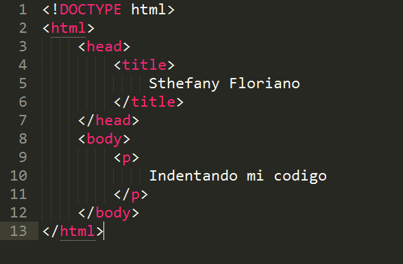
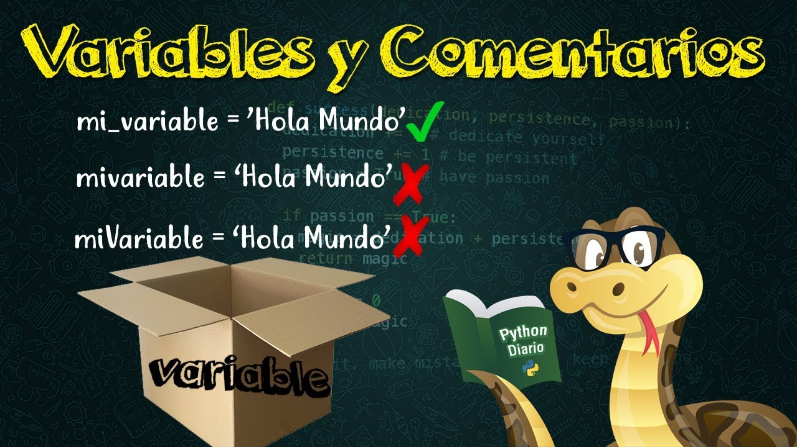
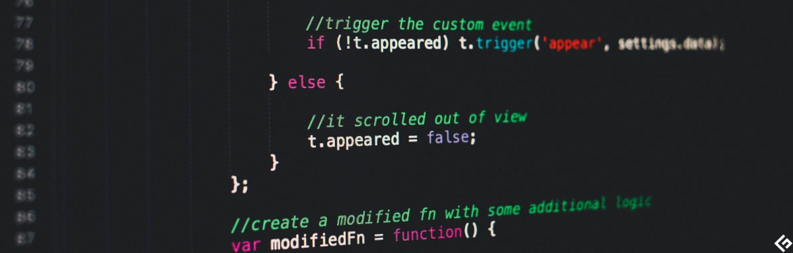

Last Updated September 29
Los code smells son patrones en el código fuente que indican posibles problemas de mantenibilidad o síntomas de diseños pobres. Algunos ejemplos comunes son nombres poco descriptivos, métodos muy largos, clases grandes, duplicación de código, y abuso de primitivas. Los code smells no son necesariamente bugs, pero sí señales que el código necesita ser refactorizado y mejorado. Ignorar los code smells puede llevar a una menor calidad y mayor dificultad de mantenimiento del código a largo plazo.
La deuda técnica se refiere al código que se entrega rápidamente sin los estándares de calidad adecuados, con la intención de reescribirlo "correctamente" después. Pero con frecuencia la deuda no se paga, llevando a una acumulación de código descuidado, parches rápidos, y diseños Short-term. Esto crea un lastre en el desarrollo futuro, y el código se vuelve progresivamente más difícil de mantener y extender. Idealmente la deuda técnica debería minimizarse, con refactorización continua para mantener la calidad.
El indentado consistente y correcto es esencial para la legibilidad del código. Mal indentado ocurre cuando las líneas no están sangradas de acuerdo a su bloque o jerarquía lógica. Esto confunde visualmente cuál código pertenece a qué bloque o bucle. El mal indentado dificulta seguir el flujo del programa y mantener el código. Es especialmente problemático en lenguajes sensibles a indentado como Python. Las guías de estilo de código deben seguirse estrictamente para evitar problemas de indentado.
Los nombres de variables y funciones deben ser lo suficientemente específicos y descriptivos para denotar su propósito y uso. Por ejemplo, usar 'x' como nombre de variable no transmite nada de información. En su lugar, nombres como 'tiempo_transcurrido' o 'clientes_premium' son más claros. Los nombres largos y descriptivos apoyan la legibilidad y evitan confusiones. También hacen innecesarios los comentarios que solo explican variables ambiguas. Los nombres auto-documentados son claves en código limpio.
El código debe ser auto-documentado con nombres significativos y una estructura clara. Pero la documentación formal también es esencial. Esto incluye comentarios overview en la cabecera de archivos/clases, docstring para funciones, y comentarios explicativos en partes complejas. El código sin documentar es difícil de entender y mantener por otros desarrolladores (y uno mismo en el futuro). La falta de documentación leads to knowledge evaporation cuando el autor ya no está disponible. El código bien documentado es esencial para systems de gran escala, projects colaborativos, y mantener institutional knowledge.
